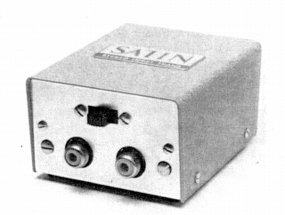

STD-1

■価格 8,200円■型式 MC型カートリッジ用昇圧トランス■一次インピーダンス 10Ω/30Ω切替■負荷抵抗 ■昇圧比 ■周波数帯域 20-30,000Hz-1.5dB■クロストーク■全高調波歪率 ■重量 ■寸法 W55×H35×D65�o■発売 〜1970年■販売終了 1974〜75年頃■備考 価格は1970年頃のもの1974年頃は12,000円
M-15L等用内蔵コアは「タムラ」製。
サテンのインデックスへ